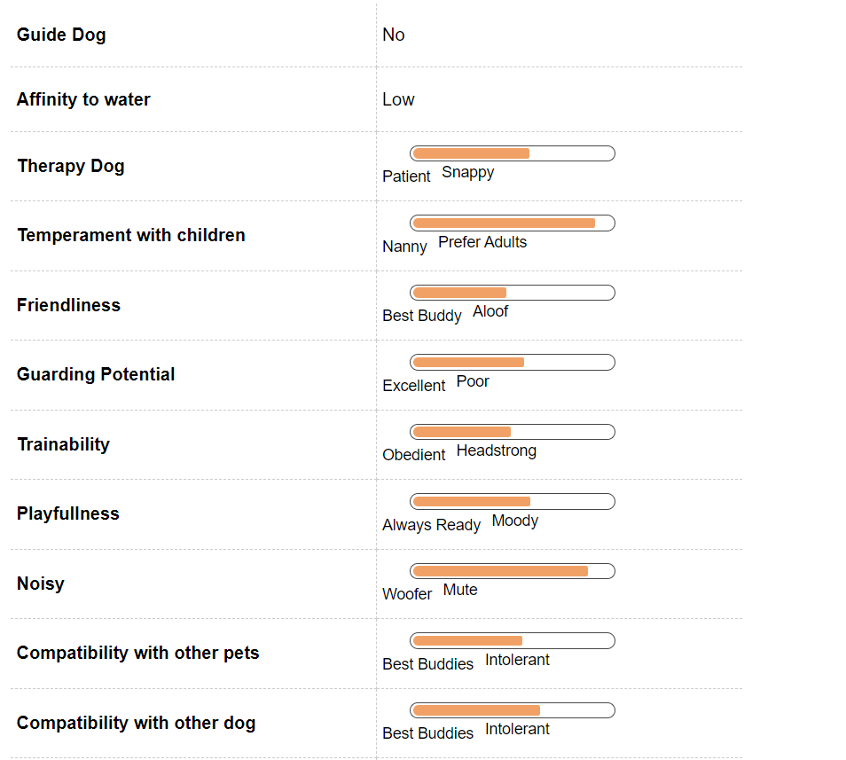

Basset Hound Dog Breed Information
Introduction
A Basset Hound is one of the most adorable dog in the canine world. The word Basset is derived from the French word bas - meaning low et meaning rather low. Belonging to the Hound family, a Basset is one of the most popular scent hound with its scent abilities next best to that of a Bloodhound. One of the most popular characterisation of a Basset Hound was that of the cartoon character Droopy, created by Tax Avery in 1963. Their adorable looks made them the brand ambassador for Hush Puppies, one of the worlds most popular shoe brands. An easy to maintain short coat and gentle temperament make Basset Hounds a good family dog. Though slightly stubborn in nature, training a Basset Hound will require patience and a gentle hand.If you are planning to bring home a Basset Hound or are a proud owner of this breed, you have made a wise decision. We bring to you all the aspects that you will have to keep in mind before getting a Basset so that you are able to provide an environment that develops a healthy dog and a long lasting companionship.
History
One of the earliest known description of a Basset Hound comes from the engravings of a short legged hunting dog from Egypt, ancient Rome and ancient Greece. With its origins going back to France, a Basset is supposed to be a descendant of St. Hubert’s hound or Bloodhound. Early descriptions of a Basset are that of a large, short legged, deep mouthed dog with a small head and long ears and one of the best sense of smell.Basset Hounds became more popular during the reign of Emperor Napoleon III who had bronze sculptures of his beloved Bassets made and exhibited at the Paris Salon.The controlled breeding of Bassets began in France in the year 1870 and were imported to England where at the end of the 19th century, the first breed standard was made.
Unique Aspects
One of the most distinctive characteristic of a Basset Hound is the sleepy, lazy appearance. Their soulful droopy eyes and long ears make them one of the most loved breeds in the world. Bassets have a very high bone density and are a heavier breed when compared to others. Unlike other dogs, Bassets will not make good swimmers due to their heavy musculoskeletal structure. Basset Hounds have a short fur that may be tan, brown or black in colour with a prominent white tip tail that makes it easy to spot them especially when they are hunting and sniffing under the dense bushes.Unlike other breeds, Bassets howl instead of barking.Their loud howl comes handy during hunting where they can let their handler know their location easily.
Fun Trivia

Basset Hounds have not only been favorite stars in various movies but has been known to be brand ambassadors for various brands as well this includes Hush Puppies and Tommy Hilfiger. You can see this breed plastered on their posters and showroom. In addition to this the Time magazine featured this breed in its cover in 1928.
Movie Character
There are various movies that feature a Basset Hound this include Smokey and the Bandit, Tiny Toon Adventures, an animated movie, this features a Basset Hound named Hugo. Then there was a hound in the Smurfs movie. Everyone who remembers Lassie will remember Pokey a friend in the series. It is not only movies they have been featured in many ways, they have been featured in the comic strip Fred Basset around the world along with this Elvis Presley sang a song for a Basset.
Celebrity Alaskan Malamute owners
There are various celebrity owners of this breed. Clint Eastwood had a hound and Marilyn Monroe and Arthur Miller had a hound. Dick Cheney had one and they were residents of the White House as well under the reign of George Washington.
Vital Stats:
Dog Breed Group:
Hound Dogs
Height:
13-14 Inches
Weight:
21-29 Kg
Life Span:
9 to 10 years
Pros and Cons
| Pros |
Cons |
|
Excellent pet for the whole family
|
Training is not easy need regular persistence
|
|
Funny looks and antics
|
Not for the first time owners
|
|
Grooming is minimal and less time consuming
|
Can trail off easily on a smell
|
Basset Hound Maintenance & Effort
Grooming
A Basset Hound is characterised by short soft fur that is easy to groom. Since Bassets are short in height, they tend to get dirty real soon especially when they are out playing in the yard or have gone for their long walks. Regular baths will be required to keep them clean. The paws of a Basset are larger than that of any breed and are sensitive in nature. After their playtime outside the house, it will be advisable to clean their paws and the space between will clean dry cloth so as to reduce the chances of infections. The ears of the Basset are extremely sensitive and also prone to infections. The long ears need to be cleaned regularly to avoid any ear infections. Also, it will be important to regularly brush the teeth of the Basset to avoid any dental infections and also for fresh breath at all times.
Basset Hound Hair & Coat

Basset Hound Health & Care
Common Health Issues
Bassets are normally a healthy breed but may be prone to certain health conditions, just like all other breeds. Before getting a puppy, do seek medical documents especially for the parents of the puppy to rule out any serious health condition. Some of the conditions that may affect a Basset puppy are:
Bloat or Gastric Dilatation Volvulus -
Bloat or Gastric Dilatation Volvulus is a life threatening condition that affects deep chested dogs likes Basset Hounds, St. Bernards and Labradors Retrievers. To avoid bloat, it will be necessary that the feeding portions for the dog are measured and the dog is not involved in heavy exercises immediately after meal. GDV occurs when the stomach has a buildup of gas and twists and results in organ failure. If not treated in time, it can be fatal. Another hereditary disorder that can inflict a Basset Hound is Von Willebrand’s disease. If your dog has Von Willebrand’s , you will notice mild to moderately severe bleeding or prolonged bleeding time.
Glaucoma -
Glaucoma is a condition in which pressure builds up inside the eye and if left untreated can lead to optic nerve and retina damage. Though reasons unknown, Bassets are highly prone to developing glaucoma.
allergies -
Bassets are also prone to allergies. Their explorations in the yard bring them in contact with a lot of allergens such a pollen or grass and can be extremely uncomfortable for them. Basset hounds are also prone to back problems due to their short stature and dense musculoskeletal structure. A Basset may hurt himself when trying to climb furniture or jumping off it or even if it is obese.
Ear infections-
Ear infections are another common health problem that may inflict the Basset Hound. Their long ears trap air and dirt and make the ears prone to ear infections. Unhealthy lifestyle and lack of sufficient exercise can lead to obesity in a Basset. As pet parents one will have to give a controlled diet to the dog and ensure that ample amount of exercise is given to the dog.
Basset Hound Behavior

Temperament
Basset Hounds are mild mannered dogs with a very laid back temperament. Easy to manage, Bassets easily socialise with adult humans, children and other pets. Early socialising ensures that the puppy becomes comfortable in his / her surroundings and grows up as a well rounded dog. Bassets can be slightly stubborn, especially when it comes to learning new tricks or during house training. During such periods, pet parents will have to maintain a firm yet gentle hand and show a lot of patience. Awarding the Bassets with their favourite treats and staring training early on can ensure a positive approach to training.Basset Hounds are pack dogs and require companionship either with another pet or with their family. If left alone, Bassets are known to express high anxiety symptoms such as howling and restlessness. With their excellent sense of smell and their excitement to explore new places and scents, pet parents will have to supervise their Basset’s movements especially when they are out in the yard or for their walks.
Environment
Basset Hounds are a calm and quiet breed that does well in apartments as well as big houses. They are excellent family pets and enjoy running in the yard or garden with their playmates. Basset Hounds do not do well in extreme hot or cold weathers. Basset Hounds love sunshine and when at home they would snuggle up to a place which receives a lot of sunshine. Prone to obesity, pet parents to a Basset Hound will have to be careful that their pooch does not become a couch potato. Even if you live in an apartment condominium, regular long walks will be needed for your Basset. Though you will have to be a tad careful and not let your Basset wander around without supervision as they love exploring new places and scents.
Training & Intelligence
A Basset Hound is quite intelligent and remembers the scents very well. Training a Basset Hound can a be a little difficult task as they are extremely stubborn in nature. If you are getting a Basset Hound puppy, early training will be advisable. Crate training and obedience training will be required to house train the puppy. A firm yet patient handling will be required while training the Basset Hound. Since Bassets have a fondness for food, using their favourite food as a treat / reward while training can bring in desired results.Like all canine breeds, early socialisation of the Basset with other dogs and humans will be imperative for a healthy personality development. Procreation Basset Hounds are a healthy and sturdy breed and mating and breeding them should not be an issue. If it is the first time that you are getting your Basset mated, you might want to seek veterinary help. An average litter size of a Basset Hound is between 8 - 10 puppies though some Basset Hounds have been known to have a larger litter size.
Basset Hound Breeding
Procreation
Basset Hounds are generally a healthy breed and even their breeding does not have many complications attached. An average male and female Basset attains sexual maturity anywhere between six to nine months of age. Though your pet is still very young to breed.
A dog takes around 18 months to reach his or her full height and structure. It is advisable to breed your dogs after at least two years of age. If you are a first timer at breeding then taking a vets help is advisable. You just sit back and enjoy the company of four to six adorable little puppies. An average litter size of the breed. Though one of the most common color of a Basset is triumvirate of tan, black and white but there are other colors as well such as white and lemon. You can have more than one color in the same litter.
Puppies
Basset Hound puppies are one of the cutest puppies to have. With their characteristic droopy eyes and long ears, they are a bundle of energy and fun to play with. Like all puppies, Basset puppies are extremely active and love to explore the place around them as they wander after new and fascinating scents. As parents to basset puppies, you will have to be careful that the Basset does not wander off too far from the house and is kept under supervision. You might face some difficulty leaving the puppies alone for long as they tend to develop separation anxiety and howl when left alone unsupervised. For new puppies, crate training will be ideal as Basset Hounds are extremely stubborn in nature. It will take a lot of perseverance to house train a Basset puppy. A gentle handling will be required to train a Basset puppy.
Alaskan Malamute Appearance
Body
A Basset Hound is one of the most adorable looking breed in the world. With an average lifespan of 10 - 12 years, Bassets have a long, short, large body. Like other bloodhounds, Bassets have a loose droopy skin which give them a look of being sad and sleepy all the time, a look that adds to the charm of this breed. Bassets hold the world record for having the longest ears which help them pick a scent while they hunt. The neck of a Basset is wide and its skull has a dolichocephalic dark nose that has over 20 million scent receptors, compared to 5millions that a human nose has, making a Basset one of the best hunters in the Canine world. A Basset Hound has a long barrel shaped body with a dense musco - skeletal structure. The fore legs are further away from the hind legs and are short with big paws. The big paws help the Basset to support its dense skeletal structure and overall weight. A Basset Hound may stand as tall as 14 inches but weigh between 20 - 35 kgs. The tail of a Basset is long and tapers especially when the Basset Hound is moving or hunting.